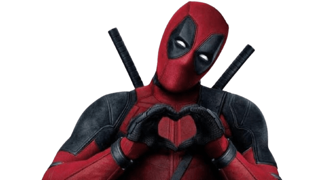
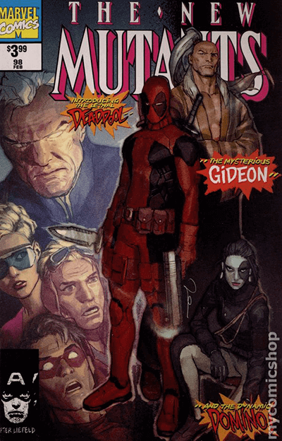
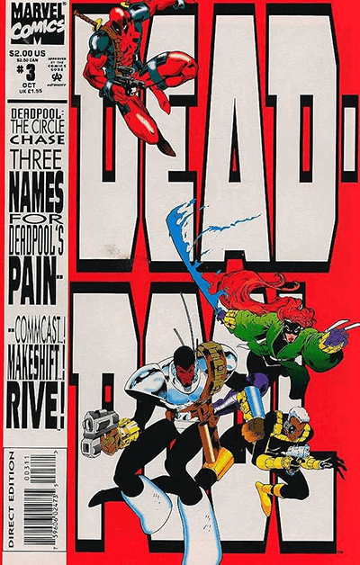
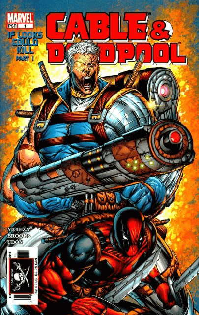
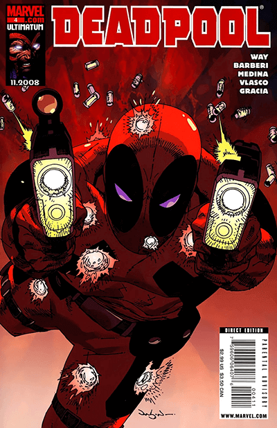

Cómics
Deadpool, conocido como el "Mercenario Bocazas", hizo su primera aparición en New Mutants #98 (1991), creado por el escritor Fabian Nicieza y el dibujante Rob Liefeld. Desde su debut, Deadpool ha pasado de ser un villano de segunda categoría a uno de los personajes más populares y reconocibles de Marvel Comics.
Primeras Apariciones y Origen
New Mutants #98 (1991)
Deadpool aparece como un villano contratado para eliminar a Cable y los Nuevos Mutantes. En esta primera aparición, Deadpool ya muestra su habilidad con las armas y su humor sarcástico, pero aún es un personaje secundario sin la complejidad que desarrollará más adelante.


The Circle Chase (1993)
Este es el primer miniserie en solitario de Deadpool, escrita por Fabian Nicieza. En esta serie, se explora más de su trasfondo como Wade Wilson, un mercenario con un pasado trágico. La historia también introduce a algunos de sus enemigos recurrentes y comienza a construir el mundo que lo rodea.
Deadpool Vol. 1 (1997-2002):
Esta serie regular, escrita por Joe Kelly, fue crucial para establecer el tono y el estilo del personaje. Aquí, Deadpool se convierte en un antihéroe más desarrollado, con un humor más oscuro y complejo. Además, se introduce la idea de que Deadpool es consciente de que está en un cómic, rompiendo la cuarta pared, lo que se convierte en una de sus características más distintivas.
Series Populares

Cable & Deadpool (2004-2008)
Esta serie de equipo, escrita por Fabian Nicieza, se centra en la extraña pero efectiva relación entre Deadpool y Cable. La serie es conocida por su mezcla de humor, acción y momentos emotivos, así como por explorar temas de amistad y redención.
Deadpool Vol. 4 (2012-2015)
Escrita por Gerry Duggan y Brian Posehn, esta serie revitalizó al personaje en la era moderna, dándole una mezcla equilibrada de comedia y drama. La serie incluye varios arcos icónicos y es muy querida por los fans.

Deadpool: Merc with a Mouth (2009-2010)
Esta serie es famosa por traer de vuelta la cabeza zombi de Deadpool de un universo alternativo, conocida como "Headpool". Es una serie que abraza completamente el lado más ridículo y exagerado del personaje.
Evolución del Personaje
Deadpool ha evolucionado significativamente desde su debut. Originalmente, era un villano genérico con habilidades de mercenario, pero con el tiempo, se ha convertido en un antihéroe complejo. Su capacidad para romper la cuarta pared, su humor oscuro, y su autoconciencia lo han convertido en un personaje único dentro del universo de Marvel. Además, los escritores han explorado su trágico pasado, sus luchas con la inmortalidad, y su deseo de redención, agregando capas de profundidad emocional a un personaje que podría haberse quedado en una simple caricatura.
Deadpool es ahora un símbolo de la subversión dentro del género de superhéroes, combinando comedia, acción y tragedia de una manera que pocos personajes pueden igualar. Su evolución continúa, y con cada nueva serie o arco, se exploran nuevas facetas de su personalidad, asegurando que sigue siendo un favorito entre los fans.